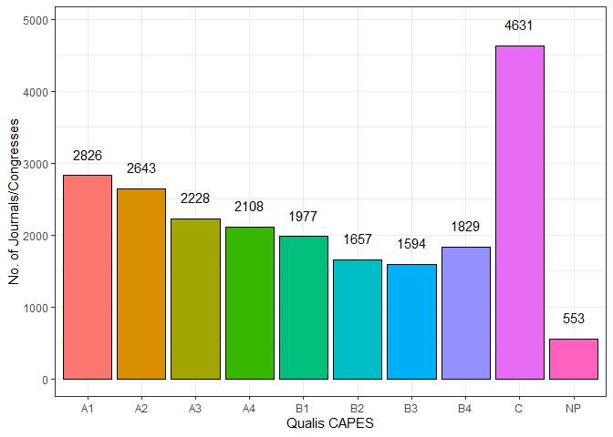

The goal of qualiscapes is to get the preliminary 2019 QUALIS CAPES.
Installation
You can install the development version from GitHub with:
# install.packages("devtools")
devtools::install_github("ramongss/qualiscapes")Example
Retrieve the data from the get_qualis() function, and show the head of the dataframe.
da_qualis <- qualiscapes::get_qualis(file = NULL)
head(da_qualis)
#> # A tibble: 6 x 3
#> ISSN_2019 TITULO_2019 ESTRATO_2019
#> <chr> <chr> <fct>
#> 1 2328-0662 # ISOJ JOURNAL C
#> 2 2238-0272 #10.ART NP
#> 3 2177-5141 (N.T.) REVISTA LITERÁRIA EM TRADUÇÃO C
#> 4 2237-5953 (RE) PENSANDO DIREITO B4
#> 5 2318-7344 @RQUIVO BRASILEIRO DE EDUCAÇÃO C
#> 6 2409-3823 [C]COMPASSESWORLD: THE ARCHITECTURE AND INTERIOR DESIG~ NPSummarize the dataframe counting the number of journals/congresses according to the Qualis CAPES.
count_qualis <-
da_qualis %>%
dplyr::mutate(qualis = ESTRATO_2019) %>%
dplyr::group_by(qualis) %>%
dplyr::summarise(count = dplyr::n())
count_qualis
#> # A tibble: 10 x 2
#> qualis count
#> <fct> <int>
#> 1 A1 2826
#> 2 A2 2643
#> 3 A3 2228
#> 4 A4 2108
#> 5 B1 1977
#> 6 B2 1657
#> 7 B3 1594
#> 8 B4 1829
#> 9 C 4631
#> 10 NP 553Plot the count_qualis dataframe to visualize the number of journals/congresses according to the preliminary 2019 Qualis CAPES.
count_qualis %>%
ggplot2::ggplot(ggplot2::aes(x = qualis, y = count)) +
ggplot2::geom_col(ggplot2::aes(fill = qualis), colour = "black", show.legend = FALSE) +
ggplot2::geom_text(ggplot2::aes(label = count), nudge_y = 300) +
ggplot2::theme_bw() +
ggplot2::labs(x = "Qualis CAPES", y = "No. of Journals/Congresses") +
ggplot2::scale_color_discrete()